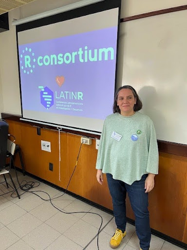

Marina Cock, co-organizer of R-Ladies Santa Rosa, recently spoke with the R Consortium about the growth of the R community in La Pampa and the transformative role of R in local academic research. Marina shared insights into the community’s activities, including introducing students to R, organizing meetups, and encouraging advanced statistical techniques like generalized linear mixed models. She also highlighted the challenges of promoting R in her university setting and her efforts to foster a supportive environment for learning and collaboration.
Please share your background and involvement with the RUGS group.

Marina Cock at first R ladies meet up in Santa Rosa, La Pampa
I am a natural resources engineer from the National University of La Pampa. I completed my PhD in plant ecology at the University of Buenos Aires. Currently, I work as both a teaching assistant and a research assistant at the National University of La Pampa.
I first engaged with the R community about seven years ago, roughly one year after I began using R. During that time, I was learning R. I shared my experiences and questions with Yanina Bellini, founder of R-ladies Santa Rosa and a significant R-ladies member. [Editor’s note: Bellini is also a member of the R Consortium Infrastructure Steering Committee.] She was also just starting and suggested that we join a global network to help each other, share our doubts, and expand our knowledge and ideas in La Pampa, specifically in our city, Santa Rosa. During that conversation, she invited me to organize the first meetup here.
We began our journey with R Ladies in Santa Rosa, La Pampa. Our first event occurred at a college, where we started engaging with students. We explained what R is, how we use it, and how they could apply it professionally. Yanina discussed data mining while I shared how I utilize R for generalized linear mixed models.
That meeting marked the beginning of our activities in Santa Rosa. Following this, Yanina invited me to join the committee for the Latin R Conference. This key conference in Latin America showcased various uses and applications of R and was an opportunity to broaden my understanding of R.
Since then, I have shared knowledge and learned much about R from these communities. My journey with R started with a free online course, and after learning the basics, I began asking questions and learning from the global community.

Yanina Bellini at the Latin R conference
Please share about a project you are working on or have worked on using the R language. What is the goal/reason, result, or anything interesting related to your industry?
R became essential for me after I completed my PhD, mainly for data wrangling. During the last year of my PhD, I received a scholarship to spend three months in the US. Because it was a short-term stay, I could not take my research samples. Instead, I proposed carrying out a data analysis project. At that point, I needed to improve my data analysis skills, and my experience with R was limited. While in the US, I worked on a research question related to plant ecology, focusing mainly on plant-plant interactions, particularly positive plant facilitation. We were investigating whether plants that grow in association with others show different traits or strategies than those that grow in isolation.
There is already a significant amount of knowledge regarding how facilitation and positive interactions vary in stressful environments. However, we aimed to understand more about the types of plants that depend on being close to other plants for survival and reproduction.
I was provided with two large databases for my analysis. One database contained information on plants in alpine systems, including the richness and biodiversity of plants living close to each other versus those more isolated. Another included a big worldwide database about plant traits. Initially, I struggled to interpret the databases and sought help downloading their data. Once I obtained it, I began the process of data wrangling and tidying it up using the tidyverse and reshaping packages in R.
During the final phase of my PhD, I dedicated time to learning the basics of R, which enabled me to organize the data effectively. Ultimately, our analysis revealed no significant differences in traits between isolated plants and those associated with others. Nonetheless, this project underscored the importance of using R in my research.
I’m unsure how to analyze large databases with other software. The main project I worked on involved R, and after that, I continued my postdoctoral studies, still investigating some of that data. I primarily use generalized linear mixed models.
We often deal with hierarchical experimental designs in ecology, particularly plant ecology. For example, plants within fields are then within regions. It’s essential to account for this lack of independence in our data. Generalized linear mixed models have proven extremely helpful for ecologists. Our techniques and packages now enable us to perform analyses that we previously couldn’t even consider.
These models are fundamental tools for plant ecologists. Other types of ecologists, like those studying animals, may also use them, but they are particularly crucial for our study designs.
I gathered my courage and started creating some maps. Initially, I hesitated to make graphs because achieving them would require many scripts and specifications. However, I soon realized that graphs and maps are handy. I couldn’t believe the maps I could create in R! Now, as a research assistant, I might be asked to make maps or handle a lot of data wrangling for various research projects that have accumulated over time.
I organize all the data needed to perform analyses, and I often tell people here that I strive to incorporate more R into our statistics courses. We encourage students to integrate more R into learning and embrace modern tools and techniques. Other universities might use R more extensively than we do, but we have been growing in our use of R over the past few years.
If you have any questions, ideas, or suggestions, my email is marinacock@gmail.com.
You can also contact Yanina Bellini Saibene.
How do I Build an R User Group?
R Consortium’s R User Group and Small Conference Support Program (RUGS) provides grants to help R groups organize, share information, and support each other worldwide. We have given grants over the past four years, encompassing over 76,000 members in over 90 user groups in 39 countries. We would like to include you! Cash grants and meetup.com accounts are awarded based on the intended use of the funds and the amount of money available to distribute
https://r-consortium.org/all-projects/rugsprogram.htm